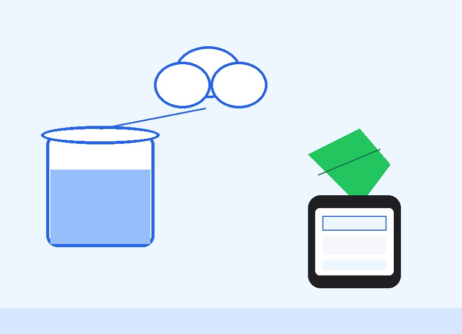
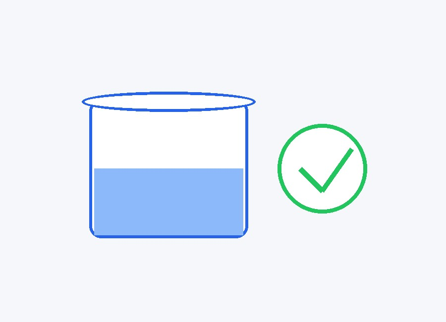
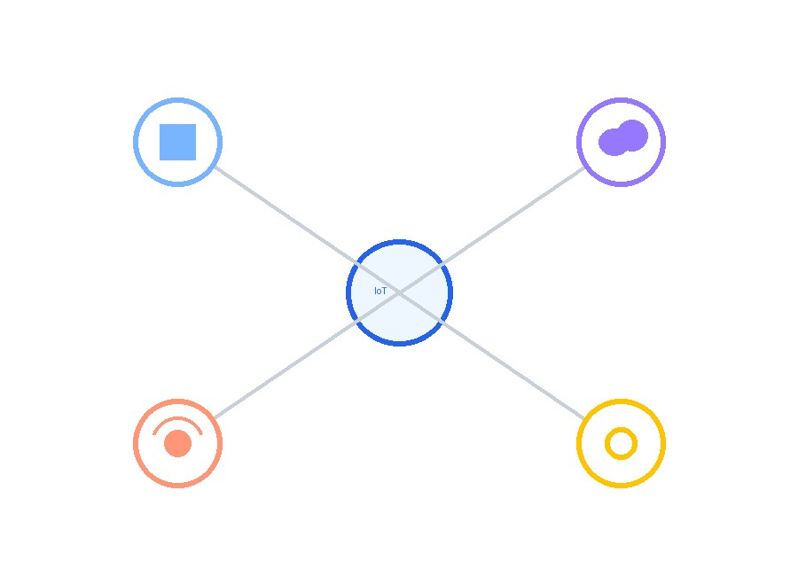
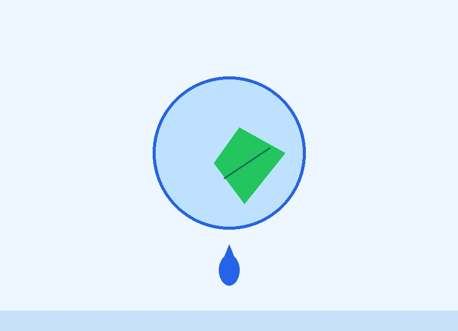
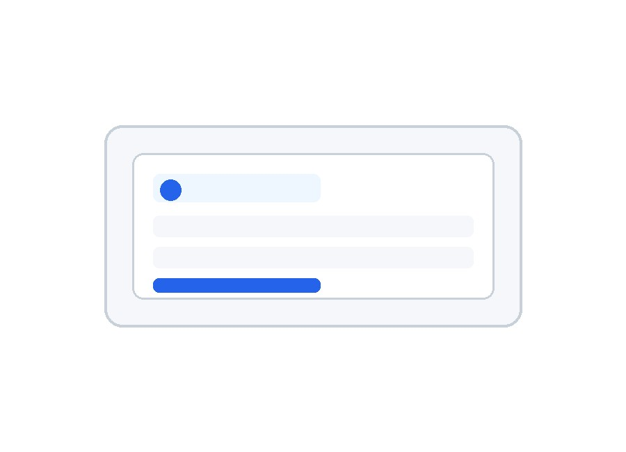
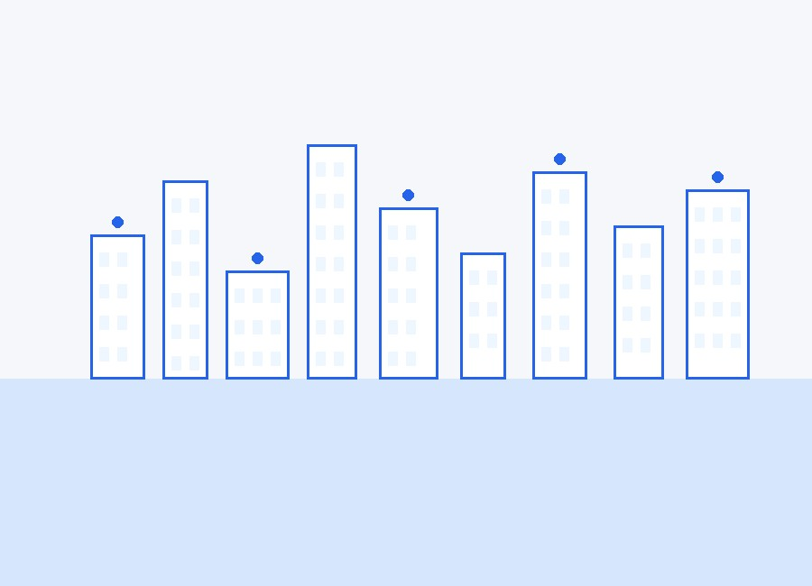

Building a Smarter Future for Every Drop
Our vision is to make every home, apartment, school, industry and farm capable of monitoring and saving water using smart IoT technology — turning awareness into action, one drop at a time.

Our Purpose
NeerPilot was created from a simple belief — that no drop of water should ever be wasted because no one was watching.
Water monitoring matters because water itself is finite. Every liter saved today is a liter available tomorrow, for someone who needs it more. We see this not just as a technical challenge, but as a responsibility we carry toward the generations who will inherit the world we shape. NeerPilot exists to make that responsibility easier to act on — for every home, every family, every community.
Save Water
Every drop tracked is a drop that doesn't go to waste.
Smart Monitoring
Real-time visibility replaces guesswork and neglect.
Sustainable Living
Small daily choices that add up to lasting impact.
Technology for Everyone
Simple enough for any home, powerful enough for any farm.

Our Mission
We're on a mission to change how people relate to water — from reactive guesswork to proactive, informed control. NeerPilot exists to reduce wastage, prevent overflow before it happens, and put real-time information directly in people's hands, so managing water becomes effortless rather than a daily chore.
- ✔ Reduce water wastage across every home and business
- ✔ Prevent tank overflow before it starts
- ✔ Encourage the shift toward smarter, connected homes
- ✔ Simplify water management for everyone, not just experts
- ✔ Empower people with real-time, actionable information
Technology with Purpose
IoT, ESP32 microcontrollers, cloud platforms, sensors and automation are powerful — but power alone isn't the point. We believe technology only matters when it solves real problems for real people. That's why every feature we build starts with a question: does this help someone save water, protect their equipment, or understand their home better?
IoT
Connected sensors that turn silence into insight.
ESP32
Reliable, low-cost hardware at the heart of every device.
Cloud
Your data, always available, always secure.
Sensors
The eyes and ears of every smart water system.
Automation
Letting the system act, so people don't have to worry.

Creating Smart Communities
NeerPilot is built to serve every kind of community that depends on stored water — from a single household to an entire campus.
Homes
Everyday peace of mind for every household.
Apartments
Shared tanks, managed intelligently for everyone.
Schools
Reliable water supply for growing young minds.
Colleges
Smarter infrastructure for larger campuses.
Hospitals
Uninterrupted water supply where it matters most.
Factories
Efficient water use for uninterrupted production.

Protecting Future Generations
The choices we make today about water shape the world our children will inherit. Every overflow prevented, every leak caught early, and every liter used responsibly is a small act of care for a future we won't fully see, but are still responsible for.
Sustainability isn't a buzzword to us — it's the reason NeerPilot exists. By making conservation effortless and responsible usage the default, we hope to reduce the environmental strain that water scarcity places on communities everywhere, one home at a time.
Innovation That Matters
We don't chase innovation for its own sake. We believe innovation is only meaningful when it makes life genuinely easier — when it's simple enough to trust, reliable enough to depend on, and affordable enough to reach everyone who needs it.
Simplicity
Powerful systems that stay easy to understand.
Reliability
Built to work quietly, day after day.
Accessibility
Designed for every household, not just the tech-savvy.
Affordability
Smart water management shouldn't be a luxury.
User-Friendly Design
Interfaces that feel natural from the very first use.


Growing Beyond One Product
NeerPilot began as a solution for a single tank — but our vision extends far beyond that. We imagine a future where smart water management scales from individual homes to entire cities, powered by data, automation and shared community insight.
- ✔ Smart Cities with connected water infrastructure
- ✔ AI-driven water analytics for smarter decisions
- ✔ Smart Agriculture that conserves water at scale
- ✔ Multi-tank monitoring for larger properties
- ✔ Partnerships on government water projects
- ✔ Community-wide monitoring for shared resources
Together We Can Save Every Drop
Whether you're a homeowner, a developer, a student or an organization — there's a place for you in this mission. Join us in building a smarter, more sustainable future for water, one home and one community at a time.